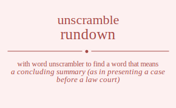

The word found after unscrambling rundown means that a concluding summary (as in presenting a case before a law court), .

The word found after unscrambling rundown means that a concluding summary (as in presenting a case before a law court), .
You can also find solutions for different combinations of letters in rundown like rundown rundonw rundwon rundwno rundnow rundnwo runodwn runodnw runowdn runownd runondw runonwd runwdon runwdno runwodn runwond runwndo runwnod runndow runndwo runnodw runnowd runnwdo runnwod rudnown rudnonw rudnwon rudnwno rudnnow rudnnwo rudonwn rudonnw rudownn rudownn rudonnw rudonwn rudwnon rudwnno rudwonn rudwonn rudwnno rudwnon rudnnow rudnnwo rudnonw rudnown rudnwno rudnwon ruondwn ruondnw ruonwdn ruonwnd ruonndw ruonnwd ruodnwn ruodnnw ruodwnn ruodwnn ruodnnw ruodnwn ruowndn ruownnd ruowdnn ruowdnn ruownnd ruowndn ruonndw ruonnwd ruondnw ruondwn ruonwnd ruonwdn ruwndon ruwndno ruwnodn ruwnond ruwnndo ruwnnod ruwdnon ruwdnno ruwdonn ruwdonn ruwdnno ruwdnon ruwondn ruwonnd ruwodnn ruwodnn ruwonnd ruwondn ruwnndo ruwnnod ruwndno ruwndon ruwnond ruwnodn runndow runndwo runnodw runnowd runnwdo runnwod rundnow rundnwo rundonw rundown rundwno rundwon runondw runonwd runodnw runodwn runownd runowdn runwndo runwnod runwdno runwdon runwond runwodn rnudown rnudonw rnudwon rnudwno rnudnow rnudnwo rnuodwn rnuodnw rnuowdn rnuownd rnuondw rnuonwd rnuwdon rnuwdno rnuwodn rnuwond rnuwndo rnuwnod rnundow rnundwo rnunodw rnunowd rnunwdo rnunwod rnduown rnduonw rnduwon rnduwno rndunow rndunwo rndouwn rndounw rndowun rndownu rndonuw rndonwu rndwuon rndwuno rndwoun rndwonu rndwnuo rndwnou rndnuow rndnuwo rndnouw rndnowu rndnwuo rndnwou rnoudwn rnoudnw rnouwdn rnouwnd rnoundw rnounwd rnoduwn rnodunw rnodwun rnodwnu rnodnuw rnodnwu rnowudn rnowund rnowdun rnowdnu rnownud rnowndu rnonudw rnonuwd rnonduw rnondwu rnonwud rnonwdu rnwudon rnwudno rnwuodn rnwuond rnwundo rnwunod rnwduon rnwduno rnwdoun rnwdonu rnwdnuo rnwdnou rnwoudn rnwound rnwodun rnwodnu rnwonud rnwondu rnwnudo rnwnuod rnwnduo rnwndou rnwnoud rnwnodu rnnudow rnnudwo rnnuodw rnnuowd rnnuwdo rnnuwod rnnduow rnnduwo rnndouw rnndowu rnndwuo rnndwou rnnoudw rnnouwd rnnoduw rnnodwu rnnowud rnnowdu rnnwudo rnnwuod rnnwduo rnnwdou rnnwoud rnnwodu rdunown rdunonw rdunwon rdunwno rdunnow rdunnwo rduonwn rduonnw rduownn rduownn rduonnw rduonwn rduwnon rduwnno rduwonn rduwonn rduwnno rduwnon rdunnow rdunnwo rdunonw rdunown rdunwno rdunwon rdnuown rdnuonw rdnuwon rdnuwno rdnunow rdnunwo rdnouwn rdnounw rdnowun rdnownu rdnonuw rdnonwu rdnwuon rdnwuno rdnwoun rdnwonu rdnwnuo rdnwnou rdnnuow rdnnuwo rdnnouw rdnnowu rdnnwuo rdnnwou rdounwn rdounnw rdouwnn rdouwnn rdounnw rdounwn rdonuwn rdonunw rdonwun rdonwnu rdonnuw rdonnwu rdowunn rdowunn rdownun rdownnu rdownun rdownnu rdonunw rdonuwn rdonnuw rdonnwu rdonwun rdonwnu rdwunon rdwunno rdwuonn rdwuonn rdwunno rdwunon rdwnuon rdwnuno rdwnoun rdwnonu rdwnnuo rdwnnou rdwounn rdwounn rdwonun rdwonnu rdwonun rdwonnu rdwnuno rdwnuon rdwnnuo rdwnnou rdwnoun rdwnonu rdnunow rdnunwo rdnuonw rdnuown rdnuwno rdnuwon rdnnuow rdnnuwo rdnnouw rdnnowu rdnnwuo rdnnwou rdnounw rdnouwn rdnonuw rdnonwu rdnowun rdnownu rdnwuno rdnwuon rdnwnuo rdnwnou rdnwoun rdnwonu roundwn roundnw rounwdn rounwnd rounndw rounnwd roudnwn roudnnw roudwnn roudwnn roudnnw roudnwn rouwndn rouwnnd rouwdnn rouwdnn rouwnnd rouwndn rounndw rounnwd roundnw roundwn rounwnd rounwdn ronudwn ronudnw ronuwdn ronuwnd ronundw ronunwd ronduwn rondunw rondwun rondwnu rondnuw rondnwu ronwudn ronwund ronwdun ronwdnu ronwnud ronwndu ronnudw ronnuwd ronnduw ronndwu ronnwud ronnwdu rodunwn rodunnw roduwnn roduwnn rodunnw rodunwn rodnuwn rodnunw rodnwun rodnwnu rodnnuw rodnnwu rodwunn rodwunn rodwnun rodwnnu rodwnun rodwnnu rodnunw rodnuwn rodnnuw rodnnwu rodnwun rodnwnu rowundn rowunnd rowudnn rowudnn rowunnd rowundn rownudn rownund rowndun rowndnu rownnud rownndu rowdunn rowdunn rowdnun rowdnnu rowdnun rowdnnu rownund rownudn rownnud rownndu rowndun rowndnu ronundw ronunwd ronudnw ronudwn ronuwnd ronuwdn ronnudw ronnuwd ronnduw ronndwu ronnwud ronnwdu rondunw ronduwn rondnuw rondnwu rondwun rondwnu ronwund ronwudn ronwnud ronwndu ronwdun ronwdnu rwundon rwundno rwunodn rwunond rwunndo rwunnod rwudnon rwudnno rwudonn rwudonn rwudnno rwudnon rwuondn rwuonnd rwuodnn rwuodnn rwuonnd rwuondn rwunndo rwunnod rwundno rwundon rwunond rwunodn rwnudon rwnudno rwnuodn rwnuond rwnundo rwnunod rwnduon rwnduno rwndoun rwndonu rwndnuo rwndnou rwnoudn rwnound rwnodun rwnodnu rwnonud rwnondu rwnnudo rwnnuod rwnnduo rwnndou rwnnoud rwnnodu rwdunon rwdunno rwduonn rwduonn rwdunno rwdunon rwdnuon rwdnuno rwdnoun rwdnonu rwdnnuo rwdnnou rwdounn rwdounn rwdonun rwdonnu rwdonun rwdonnu rwdnuno rwdnuon rwdnnuo rwdnnou rwdnoun rwdnonu rwoundn rwounnd rwoudnn rwoudnn rwounnd rwoundn rwonudn rwonund rwondun rwondnu rwonnud rwonndu rwodunn rwodunn rwodnun rwodnnu rwodnun rwodnnu rwonund rwonudn rwonnud rwonndu rwondun rwondnu rwnundo rwnunod rwnudno rwnudon rwnuond rwnuodn rwnnudo rwnnuod rwnnduo rwnndou rwnnoud rwnnodu rwnduno rwnduon rwndnuo rwndnou rwndoun rwndonu rwnound rwnoudn rwnonud rwnondu rwnodun rwnodnu rnundow rnundwo rnunodw rnunowd rnunwdo rnunwod rnudnow rnudnwo rnudonw rnudown rnudwno rnudwon rnuondw rnuonwd rnuodnw rnuodwn rnuownd rnuowdn rnuwndo rnuwnod rnuwdno rnuwdon rnuwond rnuwodn rnnudow rnnudwo rnnuodw rnnuowd rnnuwdo rnnuwod rnnduow rnnduwo rnndouw rnndowu rnndwuo rnndwou rnnoudw rnnouwd rnnoduw rnnodwu rnnowud rnnowdu rnnwudo rnnwuod rnnwduo rnnwdou rnnwoud rnnwodu rndunow rndunwo rnduonw rnduown rnduwno rnduwon rndnuow rndnuwo rndnouw rndnowu rndnwuo rndnwou rndounw rndouwn rndonuw rndonwu rndowun rndownu rndwuno rndwuon rndwnuo rndwnou rndwoun rndwonu rnoundw rnounwd rnoudnw rnoudwn rnouwnd rnouwdn rnonudw rnonuwd rnonduw rnondwu rnonwud rnonwdu rnodunw rnoduwn rnodnuw rnodnwu rnodwun rnodwnu rnowund rnowudn rnownud rnowndu rnowdun rnowdnu rnwundo rnwunod rnwudno rnwudon rnwuond rnwuodn rnwnudo rnwnuod rnwnduo rnwndou rnwnoud rnwnodu rnwduno rnwduon rnwdnuo rnwdnou rnwdoun rnwdonu rnwound rnwoudn rnwonud rnwondu rnwodun rnwodnu urndown urndonw urndwon urndwno urndnow urndnwo urnodwn urnodnw urnowdn urnownd urnondw urnonwd urnwdon urnwdno urnwodn urnwond urnwndo urnwnod urnndow urnndwo urnnodw urnnowd urnnwdo urnnwod urdnown urdnonw urdnwon urdnwno urdnnow urdnnwo urdonwn urdonnw urdownn urdownn urdonnw urdonwn urdwnon urdwnno urdwonn urdwonn urdwnno urdwnon urdnnow urdnnwo urdnonw urdnown urdnwno urdnwon urondwn urondnw uronwdn uronwnd uronndw uronnwd urodnwn urodnnw urodwnn urodwnn urodnnw urodnwn urowndn urownnd urowdnn urowdnn urownnd urowndn uronndw uronnwd urondnw urondwn uronwnd uronwdn urwndon urwndno urwnodn urwnond urwnndo urwnnod urwdnon urwdnno urwdonn urwdonn urwdnno urwdnon urwondn urwonnd urwodnn urwodnn urwonnd urwondn urwnndo urwnnod urwndno urwndon urwnond urwnodn urnndow urnndwo urnnodw urnnowd urnnwdo urnnwod urndnow urndnwo urndonw urndown urndwno urndwon urnondw urnonwd urnodnw urnodwn urnownd urnowdn urnwndo urnwnod urnwdno urnwdon urnwond urnwodn unrdown unrdonw unrdwon unrdwno unrdnow unrdnwo unrodwn unrodnw unrowdn unrownd unrondw unronwd unrwdon unrwdno unrwodn unrwond unrwndo unrwnod unrndow unrndwo unrnodw unrnowd unrnwdo unrnwod undrown undronw undrwon undrwno undrnow undrnwo undorwn undornw undowrn undownr undonrw undonwr undwron undwrno undworn undwonr undwnro undwnor undnrow undnrwo undnorw undnowr undnwro undnwor unordwn unordnw unorwdn unorwnd unorndw unornwd unodrwn unodrnw unodwrn unodwnr unodnrw unodnwr unowrdn unowrnd unowdrn unowdnr unownrd unowndr unonrdw unonrwd unondrw unondwr unonwrd unonwdr unwrdon unwrdno unwrodn unwrond unwrndo unwrnod unwdron unwdrno unwdorn unwdonr unwdnro unwdnor unwordn unwornd unwodrn unwodnr unwonrd unwondr unwnrdo unwnrod unwndro unwndor unwnord unwnodr unnrdow unnrdwo unnrodw unnrowd unnrwdo unnrwod unndrow unndrwo unndorw unndowr unndwro unndwor unnordw unnorwd unnodrw unnodwr unnowrd unnowdr unnwrdo unnwrod unnwdro unnwdor unnword unnwodr udrnown udrnonw udrnwon udrnwno udrnnow udrnnwo udronwn udronnw udrownn udrownn udronnw udronwn udrwnon udrwnno udrwonn udrwonn udrwnno udrwnon udrnnow udrnnwo udrnonw udrnown udrnwno udrnwon udnrown udnronw udnrwon udnrwno udnrnow udnrnwo udnorwn udnornw udnowrn udnownr udnonrw udnonwr udnwron udnwrno udnworn udnwonr udnwnro udnwnor udnnrow udnnrwo udnnorw udnnowr udnnwro udnnwor udornwn udornnw udorwnn udorwnn udornnw udornwn udonrwn udonrnw udonwrn udonwnr udonnrw udonnwr udowrnn udowrnn udownrn udownnr udownrn udownnr udonrnw udonrwn udonnrw udonnwr udonwrn udonwnr udwrnon udwrnno udwronn udwronn udwrnno udwrnon udwnron udwnrno udwnorn udwnonr udwnnro udwnnor udwornn udwornn udwonrn udwonnr udwonrn udwonnr udwnrno udwnron udwnnro udwnnor udwnorn udwnonr udnrnow udnrnwo udnronw udnrown udnrwno udnrwon udnnrow udnnrwo udnnorw udnnowr udnnwro udnnwor udnornw udnorwn udnonrw udnonwr udnowrn udnownr udnwrno udnwron udnwnro udnwnor udnworn udnwonr uorndwn uorndnw uornwdn uornwnd uornndw uornnwd uordnwn uordnnw uordwnn uordwnn uordnnw uordnwn uorwndn uorwnnd uorwdnn uorwdnn uorwnnd uorwndn uornndw uornnwd uorndnw uorndwn uornwnd uornwdn uonrdwn uonrdnw uonrwdn uonrwnd uonrndw uonrnwd uondrwn uondrnw uondwrn uondwnr uondnrw uondnwr uonwrdn uonwrnd uonwdrn uonwdnr uonwnrd uonwndr uonnrdw uonnrwd uonndrw uonndwr uonnwrd uonnwdr uodrnwn uodrnnw uodrwnn uodrwnn uodrnnw uodrnwn uodnrwn uodnrnw uodnwrn uodnwnr uodnnrw uodnnwr uodwrnn uodwrnn uodwnrn uodwnnr uodwnrn uodwnnr uodnrnw uodnrwn uodnnrw uodnnwr uodnwrn uodnwnr uowrndn uowrnnd uowrdnn uowrdnn uowrnnd uowrndn uownrdn uownrnd uowndrn uowndnr uownnrd uownndr uowdrnn uowdrnn uowdnrn uowdnnr uowdnrn uowdnnr uownrnd uownrdn uownnrd uownndr uowndrn uowndnr uonrndw uonrnwd uonrdnw uonrdwn uonrwnd uonrwdn uonnrdw uonnrwd uonndrw uonndwr uonnwrd uonnwdr uondrnw uondrwn uondnrw uondnwr uondwrn uondwnr uonwrnd uonwrdn uonwnrd uonwndr uonwdrn uonwdnr uwrndon uwrndno uwrnodn uwrnond uwrnndo uwrnnod uwrdnon uwrdnno uwrdonn uwrdonn uwrdnno uwrdnon uwrondn uwronnd uwrodnn uwrodnn uwronnd uwrondn uwrnndo uwrnnod uwrndno uwrndon uwrnond uwrnodn uwnrdon uwnrdno uwnrodn uwnrond uwnrndo uwnrnod uwndron uwndrno uwndorn uwndonr uwndnro uwndnor uwnordn uwnornd uwnodrn uwnodnr uwnonrd uwnondr uwnnrdo uwnnrod uwnndro uwnndor uwnnord uwnnodr uwdrnon uwdrnno uwdronn uwdronn uwdrnno uwdrnon uwdnron uwdnrno uwdnorn uwdnonr uwdnnro uwdnnor uwdornn uwdornn uwdonrn uwdonnr uwdonrn uwdonnr uwdnrno uwdnron uwdnnro uwdnnor uwdnorn uwdnonr uworndn uwornnd uwordnn uwordnn uwornnd uworndn uwonrdn uwonrnd uwondrn uwondnr uwonnrd uwonndr uwodrnn uwodrnn uwodnrn uwodnnr uwodnrn uwodnnr uwonrnd uwonrdn uwonnrd uwonndr uwondrn uwondnr uwnrndo uwnrnod uwnrdno uwnrdon uwnrond uwnrodn uwnnrdo uwnnrod uwnndro uwnndor uwnnord uwnnodr uwndrno uwndron uwndnro uwndnor uwndorn uwndonr uwnornd uwnordn uwnonrd uwnondr uwnodrn uwnodnr unrndow unrndwo unrnodw unrnowd unrnwdo unrnwod unrdnow unrdnwo unrdonw unrdown unrdwno unrdwon unrondw unronwd unrodnw unrodwn unrownd unrowdn unrwndo unrwnod unrwdno unrwdon unrwond unrwodn unnrdow unnrdwo unnrodw unnrowd unnrwdo unnrwod unndrow unndrwo unndorw unndowr unndwro unndwor unnordw unnorwd unnodrw unnodwr unnowrd unnowdr unnwrdo unnwrod unnwdro unnwdor unnword unnwodr undrnow undrnwo undronw undrown undrwno undrwon undnrow undnrwo undnorw undnowr undnwro undnwor undornw undorwn undonrw undonwr undowrn undownr undwrno undwron undwnro undwnor undworn undwonr unorndw unornwd unordnw unordwn unorwnd unorwdn unonrdw unonrwd unondrw unondwr unonwrd unonwdr unodrnw unodrwn unodnrw unodnwr unodwrn unodwnr unowrnd unowrdn unownrd unowndr unowdrn unowdnr unwrndo unwrnod unwrdno unwrdon unwrond unwrodn unwnrdo unwnrod unwndro unwndor unwnord unwnodr unwdrno unwdron unwdnro unwdnor unwdorn unwdonr unwornd unwordn unwonrd unwondr unwodrn unwodnr nrudown nrudonw nrudwon nrudwno nrudnow nrudnwo nruodwn nruodnw nruowdn nruownd nruondw nruonwd nruwdon nruwdno nruwodn nruwond nruwndo nruwnod nrundow nrundwo nrunodw nrunowd nrunwdo nrunwod nrduown nrduonw nrduwon nrduwno nrdunow nrdunwo nrdouwn nrdounw nrdowun nrdownu nrdonuw nrdonwu nrdwuon nrdwuno nrdwoun nrdwonu nrdwnuo nrdwnou nrdnuow nrdnuwo nrdnouw nrdnowu nrdnwuo nrdnwou nroudwn nroudnw nrouwdn nrouwnd nroundw nrounwd nroduwn nrodunw nrodwun nrodwnu nrodnuw nrodnwu nrowudn nrowund nrowdun nrowdnu nrownud nrowndu nronudw nronuwd nronduw nrondwu nronwud nronwdu nrwudon nrwudno nrwuodn nrwuond nrwundo nrwunod nrwduon nrwduno nrwdoun nrwdonu nrwdnuo nrwdnou nrwoudn nrwound nrwodun nrwodnu nrwonud nrwondu nrwnudo nrwnuod nrwnduo nrwndou nrwnoud nrwnodu nrnudow nrnudwo nrnuodw nrnuowd nrnuwdo nrnuwod nrnduow nrnduwo nrndouw nrndowu nrndwuo nrndwou nrnoudw nrnouwd nrnoduw nrnodwu nrnowud nrnowdu nrnwudo nrnwuod nrnwduo nrnwdou nrnwoud nrnwodu nurdown nurdonw nurdwon nurdwno nurdnow nurdnwo nurodwn nurodnw nurowdn nurownd nurondw nuronwd nurwdon nurwdno nurwodn nurwond nurwndo nurwnod nurndow nurndwo nurnodw nurnowd nurnwdo nurnwod nudrown nudronw nudrwon nudrwno nudrnow nudrnwo nudorwn nudornw nudowrn nudownr nudonrw nudonwr nudwron nudwrno nudworn nudwonr nudwnro nudwnor nudnrow nudnrwo nudnorw nudnowr nudnwro nudnwor nuordwn nuordnw nuorwdn nuorwnd nuorndw nuornwd nuodrwn nuodrnw nuodwrn nuodwnr nuodnrw nuodnwr nuowrdn nuowrnd nuowdrn nuowdnr nuownrd nuowndr nuonrdw nuonrwd nuondrw nuondwr nuonwrd nuonwdr nuwrdon nuwrdno nuwrodn nuwrond nuwrndo nuwrnod nuwdron nuwdrno nuwdorn nuwdonr nuwdnro nuwdnor nuwordn nuwornd nuwodrn nuwodnr nuwonrd nuwondr nuwnrdo nuwnrod nuwndro nuwndor nuwnord nuwnodr nunrdow nunrdwo nunrodw nunrowd nunrwdo nunrwod nundrow nundrwo nundorw nundowr nundwro nundwor nunordw nunorwd nunodrw nunodwr nunowrd nunowdr nunwrdo nunwrod nunwdro nunwdor nunword nunwodr ndruown ndruonw ndruwon ndruwno ndrunow ndrunwo ndrouwn ndrounw ndrowun ndrownu ndronuw ndronwu ndrwuon ndrwuno ndrwoun ndrwonu ndrwnuo ndrwnou ndrnuow ndrnuwo ndrnouw ndrnowu ndrnwuo ndrnwou ndurown nduronw ndurwon ndurwno ndurnow ndurnwo nduorwn nduornw nduowrn nduownr nduonrw nduonwr nduwron nduwrno nduworn nduwonr nduwnro nduwnor ndunrow ndunrwo ndunorw ndunowr ndunwro ndunwor ndoruwn ndorunw ndorwun ndorwnu ndornuw ndornwu ndourwn ndournw ndouwrn ndouwnr ndounrw ndounwr ndowrun ndowrnu ndowurn ndowunr ndownru ndownur ndonruw ndonrwu ndonurw ndonuwr ndonwru ndonwur ndwruon ndwruno ndwroun ndwronu ndwrnuo ndwrnou ndwuron ndwurno ndwuorn ndwuonr ndwunro ndwunor ndworun ndwornu ndwourn ndwounr ndwonru ndwonur ndwnruo ndwnrou ndwnuro ndwnuor ndwnoru ndwnour ndnruow ndnruwo ndnrouw ndnrowu ndnrwuo ndnrwou ndnurow ndnurwo ndnuorw ndnuowr ndnuwro ndnuwor ndnoruw ndnorwu ndnourw ndnouwr ndnowru ndnowur ndnwruo ndnwrou ndnwuro ndnwuor ndnworu ndnwour norudwn norudnw noruwdn noruwnd norundw norunwd norduwn nordunw nordwun nordwnu nordnuw nordnwu norwudn norwund norwdun norwdnu norwnud norwndu nornudw nornuwd nornduw norndwu nornwud nornwdu nourdwn nourdnw nourwdn nourwnd nourndw nournwd noudrwn noudrnw noudwrn noudwnr noudnrw noudnwr nouwrdn nouwrnd nouwdrn nouwdnr nouwnrd nouwndr nounrdw nounrwd noundrw noundwr nounwrd nounwdr nodruwn nodrunw nodrwun nodrwnu nodrnuw nodrnwu nodurwn nodurnw noduwrn noduwnr nodunrw nodunwr nodwrun nodwrnu nodwurn nodwunr nodwnru nodwnur nodnruw nodnrwu nodnurw nodnuwr nodnwru nodnwur nowrudn nowrund nowrdun nowrdnu nowrnud nowrndu nowurdn nowurnd nowudrn nowudnr nowunrd nowundr nowdrun nowdrnu nowdurn nowdunr nowdnru nowdnur nownrud nownrdu nownurd nownudr nowndru nowndur nonrudw nonruwd nonrduw nonrdwu nonrwud nonrwdu nonurdw nonurwd nonudrw nonudwr nonuwrd nonuwdr nondruw nondrwu nondurw nonduwr nondwru nondwur nonwrud nonwrdu nonwurd nonwudr nonwdru nonwdur nwrudon nwrudno nwruodn nwruond nwrundo nwrunod nwrduon nwrduno nwrdoun nwrdonu nwrdnuo nwrdnou nwroudn nwround nwrodun nwrodnu nwronud nwrondu nwrnudo nwrnuod nwrnduo nwrndou nwrnoud nwrnodu nwurdon nwurdno nwurodn nwurond nwurndo nwurnod nwudron nwudrno nwudorn nwudonr nwudnro nwudnor nwuordn nwuornd nwuodrn nwuodnr nwuonrd nwuondr nwunrdo nwunrod nwundro nwundor nwunord nwunodr nwdruon nwdruno nwdroun nwdronu nwdrnuo nwdrnou nwduron nwdurno nwduorn nwduonr nwdunro nwdunor nwdorun nwdornu nwdourn nwdounr nwdonru nwdonur nwdnruo nwdnrou nwdnuro nwdnuor nwdnoru nwdnour nworudn nworund nwordun nwordnu nwornud nworndu nwourdn nwournd nwoudrn nwoudnr nwounrd nwoundr nwodrun nwodrnu nwodurn nwodunr nwodnru nwodnur nwonrud nwonrdu nwonurd nwonudr nwondru nwondur nwnrudo nwnruod nwnrduo nwnrdou nwnroud nwnrodu nwnurdo nwnurod nwnudro nwnudor nwnuord nwnuodr nwndruo nwndrou nwnduro nwnduor nwndoru nwndour nwnorud nwnordu nwnourd nwnoudr nwnodru nwnodur nnrudow nnrudwo nnruodw nnruowd nnruwdo nnruwod nnrduow nnrduwo nnrdouw nnrdowu nnrdwuo nnrdwou nnroudw nnrouwd nnroduw nnrodwu nnrowud nnrowdu nnrwudo nnrwuod nnrwduo nnrwdou nnrwoud nnrwodu nnurdow nnurdwo nnurodw nnurowd nnurwdo nnurwod nnudrow nnudrwo nnudorw nnudowr nnudwro nnudwor nnuordw nnuorwd nnuodrw nnuodwr nnuowrd nnuowdr nnuwrdo nnuwrod nnuwdro nnuwdor nnuword nnuwodr nndruow nndruwo nndrouw nndrowu nndrwuo nndrwou nndurow nndurwo nnduorw nnduowr nnduwro nnduwor nndoruw nndorwu nndourw nndouwr nndowru nndowur nndwruo nndwrou nndwuro nndwuor nndworu nndwour nnorudw nnoruwd nnorduw nnordwu nnorwud nnorwdu nnourdw nnourwd nnoudrw nnoudwr nnouwrd nnouwdr nnodruw nnodrwu nnodurw nnoduwr nnodwru nnodwur nnowrud nnowrdu nnowurd nnowudr nnowdru nnowdur nnwrudo nnwruod nnwrduo nnwrdou nnwroud nnwrodu nnwurdo nnwurod nnwudro nnwudor nnwuord nnwuodr nnwdruo nnwdrou nnwduro nnwduor nnwdoru nnwdour nnworud nnwordu nnwourd nnwoudr nnwodru nnwodur drunown drunonw drunwon drunwno drunnow drunnwo druonwn druonnw druownn druownn druonnw druonwn druwnon druwnno druwonn druwonn druwnno druwnon drunnow drunnwo drunonw drunown drunwno drunwon drnuown drnuonw drnuwon drnuwno drnunow drnunwo drnouwn drnounw drnowun drnownu drnonuw drnonwu drnwuon drnwuno drnwoun drnwonu drnwnuo drnwnou drnnuow drnnuwo drnnouw drnnowu drnnwuo drnnwou drounwn drounnw drouwnn drouwnn drounnw drounwn dronuwn dronunw dronwun dronwnu dronnuw dronnwu drowunn drowunn drownun drownnu drownun drownnu dronunw dronuwn dronnuw dronnwu dronwun dronwnu drwunon drwunno drwuonn drwuonn drwunno drwunon drwnuon drwnuno drwnoun drwnonu drwnnuo drwnnou drwounn drwounn drwonun drwonnu drwonun drwonnu drwnuno drwnuon drwnnuo drwnnou drwnoun drwnonu drnunow drnunwo drnuonw drnuown drnuwno drnuwon drnnuow drnnuwo drnnouw drnnowu drnnwuo drnnwou drnounw drnouwn drnonuw drnonwu drnowun drnownu drnwuno drnwuon drnwnuo drnwnou drnwoun drnwonu durnown durnonw durnwon durnwno durnnow durnnwo duronwn duronnw durownn durownn duronnw duronwn durwnon durwnno durwonn durwonn durwnno durwnon durnnow durnnwo durnonw durnown durnwno durnwon dunrown dunronw dunrwon dunrwno dunrnow dunrnwo dunorwn dunornw dunowrn dunownr dunonrw dunonwr dunwron dunwrno dunworn dunwonr dunwnro dunwnor dunnrow dunnrwo dunnorw dunnowr dunnwro dunnwor duornwn duornnw duorwnn duorwnn duornnw duornwn duonrwn duonrnw duonwrn duonwnr duonnrw duonnwr duowrnn duowrnn duownrn duownnr duownrn duownnr duonrnw duonrwn duonnrw duonnwr duonwrn duonwnr duwrnon duwrnno duwronn duwronn duwrnno duwrnon duwnron duwnrno duwnorn duwnonr duwnnro duwnnor duwornn duwornn duwonrn duwonnr duwonrn duwonnr duwnrno duwnron duwnnro duwnnor duwnorn duwnonr dunrnow dunrnwo dunronw dunrown dunrwno dunrwon dunnrow dunnrwo dunnorw dunnowr dunnwro dunnwor dunornw dunorwn dunonrw dunonwr dunowrn dunownr dunwrno dunwron dunwnro dunwnor dunworn dunwonr dnruown dnruonw dnruwon dnruwno dnrunow dnrunwo dnrouwn dnrounw dnrowun dnrownu dnronuw dnronwu dnrwuon dnrwuno dnrwoun dnrwonu dnrwnuo dnrwnou dnrnuow dnrnuwo dnrnouw dnrnowu dnrnwuo dnrnwou dnurown dnuronw dnurwon dnurwno dnurnow dnurnwo dnuorwn dnuornw dnuowrn dnuownr dnuonrw dnuonwr dnuwron dnuwrno dnuworn dnuwonr dnuwnro dnuwnor dnunrow dnunrwo dnunorw dnunowr dnunwro dnunwor dnoruwn dnorunw dnorwun dnorwnu dnornuw dnornwu dnourwn dnournw dnouwrn dnouwnr dnounrw dnounwr dnowrun dnowrnu dnowurn dnowunr dnownru dnownur dnonruw dnonrwu dnonurw dnonuwr dnonwru dnonwur dnwruon dnwruno dnwroun dnwronu dnwrnuo dnwrnou dnwuron dnwurno dnwuorn dnwuonr dnwunro dnwunor dnworun dnwornu dnwourn dnwounr dnwonru dnwonur dnwnruo dnwnrou dnwnuro dnwnuor dnwnoru dnwnour dnnruow dnnruwo dnnrouw dnnrowu dnnrwuo dnnrwou dnnurow dnnurwo dnnuorw dnnuowr dnnuwro dnnuwor dnnoruw dnnorwu dnnourw dnnouwr dnnowru dnnowur dnnwruo dnnwrou dnnwuro dnnwuor dnnworu dnnwour dorunwn dorunnw doruwnn doruwnn dorunnw dorunwn dornuwn dornunw dornwun dornwnu dornnuw dornnwu dorwunn dorwunn dorwnun dorwnnu dorwnun dorwnnu dornunw dornuwn dornnuw dornnwu dornwun dornwnu dournwn dournnw dourwnn dourwnn dournnw dournwn dounrwn dounrnw dounwrn dounwnr dounnrw dounnwr douwrnn douwrnn douwnrn douwnnr douwnrn douwnnr dounrnw dounrwn dounnrw dounnwr dounwrn dounwnr donruwn donrunw donrwun donrwnu donrnuw donrnwu donurwn donurnw donuwrn donuwnr donunrw donunwr donwrun donwrnu donwurn donwunr donwnru donwnur donnruw donnrwu donnurw donnuwr donnwru donnwur dowrunn dowrunn dowrnun dowrnnu dowrnun dowrnnu dowurnn dowurnn dowunrn dowunnr dowunrn dowunnr downrun downrnu downurn downunr downnru downnur downrun downrnu downurn downunr downnru downnur donrunw donruwn donrnuw donrnwu donrwun donrwnu donurnw donurwn donunrw donunwr donuwrn donuwnr donnruw donnrwu donnurw donnuwr donnwru donnwur donwrun donwrnu donwurn donwunr donwnru donwnur dwrunon dwrunno dwruonn dwruonn dwrunno dwrunon dwrnuon dwrnuno dwrnoun dwrnonu dwrnnuo dwrnnou dwrounn dwrounn dwronun dwronnu dwronun dwronnu dwrnuno dwrnuon dwrnnuo dwrnnou dwrnoun dwrnonu dwurnon dwurnno dwuronn dwuronn dwurnno dwurnon dwunron dwunrno dwunorn dwunonr dwunnro dwunnor dwuornn dwuornn dwuonrn dwuonnr dwuonrn dwuonnr dwunrno dwunron dwunnro dwunnor dwunorn dwunonr dwnruon dwnruno dwnroun dwnronu dwnrnuo dwnrnou dwnuron dwnurno dwnuorn dwnuonr dwnunro dwnunor dwnorun dwnornu dwnourn dwnounr dwnonru dwnonur dwnnruo dwnnrou dwnnuro dwnnuor dwnnoru dwnnour dworunn dworunn dwornun dwornnu dwornun dwornnu dwournn dwournn dwounrn dwounnr dwounrn dwounnr dwonrun dwonrnu dwonurn dwonunr dwonnru dwonnur dwonrun dwonrnu dwonurn dwonunr dwonnru dwonnur dwnruno dwnruon dwnrnuo dwnrnou dwnroun dwnronu dwnurno dwnuron dwnunro dwnunor dwnuorn dwnuonr dwnnruo dwnnrou dwnnuro dwnnuor dwnnoru dwnnour dwnorun dwnornu dwnourn dwnounr dwnonru dwnonur dnrunow dnrunwo dnruonw dnruown dnruwno dnruwon dnrnuow dnrnuwo dnrnouw dnrnowu dnrnwuo dnrnwou dnrounw dnrouwn dnronuw dnronwu dnrowun dnrownu dnrwuno dnrwuon dnrwnuo dnrwnou dnrwoun dnrwonu dnurnow dnurnwo dnuronw dnurown dnurwno dnurwon dnunrow dnunrwo dnunorw dnunowr dnunwro dnunwor dnuornw dnuorwn dnuonrw dnuonwr dnuowrn dnuownr dnuwrno dnuwron dnuwnro dnuwnor dnuworn dnuwonr dnnruow dnnruwo dnnrouw dnnrowu dnnrwuo dnnrwou dnnurow dnnurwo dnnuorw dnnuowr dnnuwro dnnuwor dnnoruw dnnorwu dnnourw dnnouwr dnnowru dnnowur dnnwruo dnnwrou dnnwuro dnnwuor dnnworu dnnwour dnorunw dnoruwn dnornuw dnornwu dnorwun dnorwnu dnournw dnourwn dnounrw dnounwr dnouwrn dnouwnr dnonruw dnonrwu dnonurw dnonuwr dnonwru dnonwur dnowrun dnowrnu dnowurn dnowunr dnownru dnownur dnwruno dnwruon dnwrnuo dnwrnou dnwroun dnwronu dnwurno dnwuron dnwunro dnwunor dnwuorn dnwuonr dnwnruo dnwnrou dnwnuro dnwnuor dnwnoru dnwnour dnworun dnwornu dnwourn dnwounr dnwonru dnwonur orundwn orundnw orunwdn orunwnd orunndw orunnwd orudnwn orudnnw orudwnn orudwnn orudnnw orudnwn oruwndn oruwnnd oruwdnn oruwdnn oruwnnd oruwndn orunndw orunnwd orundnw orundwn orunwnd orunwdn ornudwn ornudnw ornuwdn ornuwnd ornundw ornunwd ornduwn orndunw orndwun orndwnu orndnuw orndnwu ornwudn ornwund ornwdun ornwdnu ornwnud ornwndu ornnudw ornnuwd ornnduw ornndwu ornnwud ornnwdu ordunwn ordunnw orduwnn orduwnn ordunnw ordunwn ordnuwn ordnunw ordnwun ordnwnu ordnnuw ordnnwu ordwunn ordwunn ordwnun ordwnnu ordwnun ordwnnu ordnunw ordnuwn ordnnuw ordnnwu ordnwun ordnwnu orwundn orwunnd orwudnn orwudnn orwunnd orwundn orwnudn orwnund orwndun orwndnu orwnnud orwnndu orwdunn orwdunn orwdnun orwdnnu orwdnun orwdnnu orwnund orwnudn orwnnud orwnndu orwndun orwndnu ornundw ornunwd ornudnw ornudwn ornuwnd ornuwdn ornnudw ornnuwd ornnduw ornndwu ornnwud ornnwdu orndunw ornduwn orndnuw orndnwu orndwun orndwnu ornwund ornwudn ornwnud ornwndu ornwdun ornwdnu ourndwn ourndnw ournwdn ournwnd ournndw ournnwd ourdnwn ourdnnw ourdwnn ourdwnn ourdnnw ourdnwn ourwndn ourwnnd ourwdnn ourwdnn ourwnnd ourwndn ournndw ournnwd ourndnw ourndwn ournwnd ournwdn ounrdwn ounrdnw ounrwdn ounrwnd ounrndw ounrnwd oundrwn oundrnw oundwrn oundwnr oundnrw oundnwr ounwrdn ounwrnd ounwdrn ounwdnr ounwnrd ounwndr ounnrdw ounnrwd ounndrw ounndwr ounnwrd ounnwdr oudrnwn oudrnnw oudrwnn oudrwnn oudrnnw oudrnwn oudnrwn oudnrnw oudnwrn oudnwnr oudnnrw oudnnwr oudwrnn oudwrnn oudwnrn oudwnnr oudwnrn oudwnnr oudnrnw oudnrwn oudnnrw oudnnwr oudnwrn oudnwnr ouwrndn ouwrnnd ouwrdnn ouwrdnn ouwrnnd ouwrndn ouwnrdn ouwnrnd ouwndrn ouwndnr ouwnnrd ouwnndr ouwdrnn ouwdrnn ouwdnrn ouwdnnr ouwdnrn ouwdnnr ouwnrnd ouwnrdn ouwnnrd ouwnndr ouwndrn ouwndnr ounrndw ounrnwd ounrdnw ounrdwn ounrwnd ounrwdn ounnrdw ounnrwd ounndrw ounndwr ounnwrd ounnwdr oundrnw oundrwn oundnrw oundnwr oundwrn oundwnr ounwrnd ounwrdn ounwnrd ounwndr ounwdrn ounwdnr onrudwn onrudnw onruwdn onruwnd onrundw onrunwd onrduwn onrdunw onrdwun onrdwnu onrdnuw onrdnwu onrwudn onrwund onrwdun onrwdnu onrwnud onrwndu onrnudw onrnuwd onrnduw onrndwu onrnwud onrnwdu onurdwn onurdnw onurwdn onurwnd onurndw onurnwd onudrwn onudrnw onudwrn onudwnr onudnrw onudnwr onuwrdn onuwrnd onuwdrn onuwdnr onuwnrd onuwndr onunrdw onunrwd onundrw onundwr onunwrd onunwdr ondruwn ondrunw ondrwun ondrwnu ondrnuw ondrnwu ondurwn ondurnw onduwrn onduwnr ondunrw ondunwr ondwrun ondwrnu ondwurn ondwunr ondwnru ondwnur ondnruw ondnrwu ondnurw ondnuwr ondnwru ondnwur onwrudn onwrund onwrdun onwrdnu onwrnud onwrndu onwurdn onwurnd onwudrn onwudnr onwunrd onwundr onwdrun onwdrnu onwdurn onwdunr onwdnru onwdnur onwnrud onwnrdu onwnurd onwnudr onwndru onwndur onnrudw onnruwd onnrduw onnrdwu onnrwud onnrwdu onnurdw onnurwd onnudrw onnudwr onnuwrd onnuwdr onndruw onndrwu onndurw onnduwr onndwru onndwur onnwrud onnwrdu onnwurd onnwudr onnwdru onnwdur odrunwn odrunnw odruwnn odruwnn odrunnw odrunwn odrnuwn odrnunw odrnwun odrnwnu odrnnuw odrnnwu odrwunn odrwunn odrwnun odrwnnu odrwnun odrwnnu odrnunw odrnuwn odrnnuw odrnnwu odrnwun odrnwnu odurnwn odurnnw odurwnn odurwnn odurnnw odurnwn odunrwn odunrnw odunwrn odunwnr odunnrw odunnwr oduwrnn oduwrnn oduwnrn oduwnnr oduwnrn oduwnnr odunrnw odunrwn odunnrw odunnwr odunwrn odunwnr odnruwn odnrunw odnrwun odnrwnu odnrnuw odnrnwu odnurwn odnurnw odnuwrn odnuwnr odnunrw odnunwr odnwrun odnwrnu odnwurn odnwunr odnwnru odnwnur odnnruw odnnrwu odnnurw odnnuwr odnnwru odnnwur odwrunn odwrunn odwrnun odwrnnu odwrnun odwrnnu odwurnn odwurnn odwunrn odwunnr odwunrn odwunnr odwnrun odwnrnu odwnurn odwnunr odwnnru odwnnur odwnrun odwnrnu odwnurn odwnunr odwnnru odwnnur odnrunw odnruwn odnrnuw odnrnwu odnrwun odnrwnu odnurnw odnurwn odnunrw odnunwr odnuwrn odnuwnr odnnruw odnnrwu odnnurw odnnuwr odnnwru odnnwur odnwrun odnwrnu odnwurn odnwunr odnwnru odnwnur owrundn owrunnd owrudnn owrudnn owrunnd owrundn owrnudn owrnund owrndun owrndnu owrnnud owrnndu owrdunn owrdunn owrdnun owrdnnu owrdnun owrdnnu owrnund owrnudn owrnnud owrnndu owrndun owrndnu owurndn owurnnd owurdnn owurdnn owurnnd owurndn owunrdn owunrnd owundrn owundnr owunnrd owunndr owudrnn owudrnn owudnrn owudnnr owudnrn owudnnr owunrnd owunrdn owunnrd owunndr owundrn owundnr ownrudn ownrund ownrdun ownrdnu ownrnud ownrndu ownurdn ownurnd ownudrn ownudnr ownunrd ownundr owndrun owndrnu owndurn owndunr owndnru owndnur ownnrud ownnrdu ownnurd ownnudr ownndru ownndur owdrunn owdrunn owdrnun owdrnnu owdrnun owdrnnu owdurnn owdurnn owdunrn owdunnr owdunrn owdunnr owdnrun owdnrnu owdnurn owdnunr owdnnru owdnnur owdnrun owdnrnu owdnurn owdnunr owdnnru owdnnur ownrund ownrudn ownrnud ownrndu ownrdun ownrdnu ownurnd ownurdn ownunrd ownundr ownudrn ownudnr ownnrud ownnrdu ownnurd ownnudr ownndru ownndur owndrun owndrnu owndurn owndunr owndnru owndnur onrundw onrunwd onrudnw onrudwn onruwnd onruwdn onrnudw onrnuwd onrnduw onrndwu onrnwud onrnwdu onrdunw onrduwn onrdnuw onrdnwu onrdwun onrdwnu onrwund onrwudn onrwnud onrwndu onrwdun onrwdnu onurndw onurnwd onurdnw onurdwn onurwnd onurwdn onunrdw onunrwd onundrw onundwr onunwrd onunwdr onudrnw onudrwn onudnrw onudnwr onudwrn onudwnr onuwrnd onuwrdn onuwnrd onuwndr onuwdrn onuwdnr onnrudw onnruwd onnrduw onnrdwu onnrwud onnrwdu onnurdw onnurwd onnudrw onnudwr onnuwrd onnuwdr onndruw onndrwu onndurw onnduwr onndwru onndwur onnwrud onnwrdu onnwurd onnwudr onnwdru onnwdur ondrunw ondruwn ondrnuw ondrnwu ondrwun ondrwnu ondurnw ondurwn ondunrw ondunwr onduwrn onduwnr ondnruw ondnrwu ondnurw ondnuwr ondnwru ondnwur ondwrun ondwrnu ondwurn ondwunr ondwnru ondwnur onwrund onwrudn onwrnud onwrndu onwrdun onwrdnu onwurnd onwurdn onwunrd onwundr onwudrn onwudnr onwnrud onwnrdu onwnurd onwnudr onwndru onwndur onwdrun onwdrnu onwdurn onwdunr onwdnru onwdnur wrundon wrundno wrunodn wrunond wrunndo wrunnod wrudnon wrudnno wrudonn wrudonn wrudnno wrudnon wruondn wruonnd wruodnn wruodnn wruonnd wruondn wrunndo wrunnod wrundno wrundon wrunond wrunodn wrnudon wrnudno wrnuodn wrnuond wrnundo wrnunod wrnduon wrnduno wrndoun wrndonu wrndnuo wrndnou wrnoudn wrnound wrnodun wrnodnu wrnonud wrnondu wrnnudo wrnnuod wrnnduo wrnndou wrnnoud wrnnodu wrdunon wrdunno wrduonn wrduonn wrdunno wrdunon wrdnuon wrdnuno wrdnoun wrdnonu wrdnnuo wrdnnou wrdounn wrdounn wrdonun wrdonnu wrdonun wrdonnu wrdnuno wrdnuon wrdnnuo wrdnnou wrdnoun wrdnonu wroundn wrounnd wroudnn wroudnn wrounnd wroundn wronudn wronund wrondun wrondnu wronnud wronndu wrodunn wrodunn wrodnun wrodnnu wrodnun wrodnnu wronund wronudn wronnud wronndu wrondun wrondnu wrnundo wrnunod wrnudno wrnudon wrnuond wrnuodn wrnnudo wrnnuod wrnnduo wrnndou wrnnoud wrnnodu wrnduno wrnduon wrndnuo wrndnou wrndoun wrndonu wrnound wrnoudn wrnonud wrnondu wrnodun wrnodnu wurndon wurndno wurnodn wurnond wurnndo wurnnod wurdnon wurdnno wurdonn wurdonn wurdnno wurdnon wurondn wuronnd wurodnn wurodnn wuronnd wurondn wurnndo wurnnod wurndno wurndon wurnond wurnodn wunrdon wunrdno wunrodn wunrond wunrndo wunrnod wundron wundrno wundorn wundonr wundnro wundnor wunordn wunornd wunodrn wunodnr wunonrd wunondr wunnrdo wunnrod wunndro wunndor wunnord wunnodr wudrnon wudrnno wudronn wudronn wudrnno wudrnon wudnron wudnrno wudnorn wudnonr wudnnro wudnnor wudornn wudornn wudonrn wudonnr wudonrn wudonnr wudnrno wudnron wudnnro wudnnor wudnorn wudnonr wuorndn wuornnd wuordnn wuordnn wuornnd wuorndn wuonrdn wuonrnd wuondrn wuondnr wuonnrd wuonndr wuodrnn wuodrnn wuodnrn wuodnnr wuodnrn wuodnnr wuonrnd wuonrdn wuonnrd wuonndr wuondrn wuondnr wunrndo wunrnod wunrdno wunrdon wunrond wunrodn wunnrdo wunnrod wunndro wunndor wunnord wunnodr wundrno wundron wundnro wundnor wundorn wundonr wunornd wunordn wunonrd wunondr wunodrn wunodnr wnrudon wnrudno wnruodn wnruond wnrundo wnrunod wnrduon wnrduno wnrdoun wnrdonu wnrdnuo wnrdnou wnroudn wnround wnrodun wnrodnu wnronud wnrondu wnrnudo wnrnuod wnrnduo wnrndou wnrnoud wnrnodu wnurdon wnurdno wnurodn wnurond wnurndo wnurnod wnudron wnudrno wnudorn wnudonr wnudnro wnudnor wnuordn wnuornd wnuodrn wnuodnr wnuonrd wnuondr wnunrdo wnunrod wnundro wnundor wnunord wnunodr wndruon wndruno wndroun wndronu wndrnuo wndrnou wnduron wndurno wnduorn wnduonr wndunro wndunor wndorun wndornu wndourn wndounr wndonru wndonur wndnruo wndnrou wndnuro wndnuor wndnoru wndnour wnorudn wnorund wnordun wnordnu wnornud wnorndu wnourdn wnournd wnoudrn wnoudnr wnounrd wnoundr wnodrun wnodrnu wnodurn wnodunr wnodnru wnodnur wnonrud wnonrdu wnonurd wnonudr wnondru wnondur wnnrudo wnnruod wnnrduo wnnrdou wnnroud wnnrodu wnnurdo wnnurod wnnudro wnnudor wnnuord wnnuodr wnndruo wnndrou wnnduro wnnduor wnndoru wnndour wnnorud wnnordu wnnourd wnnoudr wnnodru wnnodur wdrunon wdrunno wdruonn wdruonn wdrunno wdrunon wdrnuon wdrnuno wdrnoun wdrnonu wdrnnuo wdrnnou wdrounn wdrounn wdronun wdronnu wdronun wdronnu wdrnuno wdrnuon wdrnnuo wdrnnou wdrnoun wdrnonu wdurnon wdurnno wduronn wduronn wdurnno wdurnon wdunron wdunrno wdunorn wdunonr wdunnro wdunnor wduornn wduornn wduonrn wduonnr wduonrn wduonnr wdunrno wdunron wdunnro wdunnor wdunorn wdunonr wdnruon wdnruno wdnroun wdnronu wdnrnuo wdnrnou wdnuron wdnurno wdnuorn wdnuonr wdnunro wdnunor wdnorun wdnornu wdnourn wdnounr wdnonru wdnonur wdnnruo wdnnrou wdnnuro wdnnuor wdnnoru wdnnour wdorunn wdorunn wdornun wdornnu wdornun wdornnu wdournn wdournn wdounrn wdounnr wdounrn wdounnr wdonrun wdonrnu wdonurn wdonunr wdonnru wdonnur wdonrun wdonrnu wdonurn wdonunr wdonnru wdonnur wdnruno wdnruon wdnrnuo wdnrnou wdnroun wdnronu wdnurno wdnuron wdnunro wdnunor wdnuorn wdnuonr wdnnruo wdnnrou wdnnuro wdnnuor wdnnoru wdnnour wdnorun wdnornu wdnourn wdnounr wdnonru wdnonur worundn worunnd worudnn worudnn worunnd worundn wornudn wornund worndun worndnu wornnud wornndu wordunn wordunn wordnun wordnnu wordnun wordnnu wornund wornudn wornnud wornndu worndun worndnu wourndn wournnd wourdnn wourdnn wournnd wourndn wounrdn wounrnd woundrn woundnr wounnrd wounndr woudrnn woudrnn woudnrn woudnnr woudnrn woudnnr wounrnd wounrdn wounnrd wounndr woundrn woundnr wonrudn wonrund wonrdun wonrdnu wonrnud wonrndu wonurdn wonurnd wonudrn wonudnr wonunrd wonundr wondrun wondrnu wondurn wondunr wondnru wondnur wonnrud wonnrdu wonnurd wonnudr wonndru wonndur wodrunn wodrunn wodrnun wodrnnu wodrnun wodrnnu wodurnn wodurnn wodunrn wodunnr wodunrn wodunnr wodnrun wodnrnu wodnurn wodnunr wodnnru wodnnur wodnrun wodnrnu wodnurn wodnunr wodnnru wodnnur wonrund wonrudn wonrnud wonrndu wonrdun wonrdnu wonurnd wonurdn wonunrd wonundr wonudrn wonudnr wonnrud wonnrdu wonnurd wonnudr wonndru wonndur wondrun wondrnu wondurn wondunr wondnru wondnur wnrundo wnrunod wnrudno wnrudon wnruond wnruodn wnrnudo wnrnuod wnrnduo wnrndou wnrnoud wnrnodu wnrduno wnrduon wnrdnuo wnrdnou wnrdoun wnrdonu wnround wnroudn wnronud wnrondu wnrodun wnrodnu wnurndo wnurnod wnurdno wnurdon wnurond wnurodn wnunrdo wnunrod wnundro wnundor wnunord wnunodr wnudrno wnudron wnudnro wnudnor wnudorn wnudonr wnuornd wnuordn wnuonrd wnuondr wnuodrn wnuodnr wnnrudo wnnruod wnnrduo wnnrdou wnnroud wnnrodu wnnurdo wnnurod wnnudro wnnudor wnnuord wnnuodr wnndruo wnndrou wnnduro wnnduor wnndoru wnndour wnnorud wnnordu wnnourd wnnoudr wnnodru wnnodur wndruno wndruon wndrnuo wndrnou wndroun wndronu wndurno wnduron wndunro wndunor wnduorn wnduonr wndnruo wndnrou wndnuro wndnuor wndnoru wndnour wndorun wndornu wndourn wndounr wndonru wndonur wnorund wnorudn wnornud wnorndu wnordun wnordnu wnournd wnourdn wnounrd wnoundr wnoudrn wnoudnr wnonrud wnonrdu wnonurd wnonudr wnondru wnondur wnodrun wnodrnu wnodurn wnodunr wnodnru wnodnur nrundow nrundwo nrunodw nrunowd nrunwdo nrunwod nrudnow nrudnwo nrudonw nrudown nrudwno nrudwon nruondw nruonwd nruodnw nruodwn nruownd nruowdn nruwndo nruwnod nruwdno nruwdon nruwond nruwodn nrnudow nrnudwo nrnuodw nrnuowd nrnuwdo nrnuwod nrnduow nrnduwo nrndouw nrndowu nrndwuo nrndwou nrnoudw nrnouwd nrnoduw nrnodwu nrnowud nrnowdu nrnwudo nrnwuod nrnwduo nrnwdou nrnwoud nrnwodu nrdunow nrdunwo nrduonw nrduown nrduwno nrduwon nrdnuow nrdnuwo nrdnouw nrdnowu nrdnwuo nrdnwou nrdounw nrdouwn nrdonuw nrdonwu nrdowun nrdownu nrdwuno nrdwuon nrdwnuo nrdwnou nrdwoun nrdwonu nroundw nrounwd nroudnw nroudwn nrouwnd nrouwdn nronudw nronuwd nronduw nrondwu nronwud nronwdu nrodunw nroduwn nrodnuw nrodnwu nrodwun nrodwnu nrowund nrowudn nrownud nrowndu nrowdun nrowdnu nrwundo nrwunod nrwudno nrwudon nrwuond nrwuodn nrwnudo nrwnuod nrwnduo nrwndou nrwnoud nrwnodu nrwduno nrwduon nrwdnuo nrwdnou nrwdoun nrwdonu nrwound nrwoudn nrwonud nrwondu nrwodun nrwodnu nurndow nurndwo nurnodw nurnowd nurnwdo nurnwod nurdnow nurdnwo nurdonw nurdown nurdwno nurdwon nurondw nuronwd nurodnw nurodwn nurownd nurowdn nurwndo nurwnod nurwdno nurwdon nurwond nurwodn nunrdow nunrdwo nunrodw nunrowd nunrwdo nunrwod nundrow nundrwo nundorw nundowr nundwro nundwor nunordw nunorwd nunodrw nunodwr nunowrd nunowdr nunwrdo nunwrod nunwdro nunwdor nunword nunwodr nudrnow nudrnwo nudronw nudrown nudrwno nudrwon nudnrow nudnrwo nudnorw nudnowr nudnwro nudnwor nudornw nudorwn nudonrw nudonwr nudowrn nudownr nudwrno nudwron nudwnro nudwnor nudworn nudwonr nuorndw nuornwd nuordnw nuordwn nuorwnd nuorwdn nuonrdw nuonrwd nuondrw nuondwr nuonwrd nuonwdr nuodrnw nuodrwn nuodnrw nuodnwr nuodwrn nuodwnr nuowrnd nuowrdn nuownrd nuowndr nuowdrn nuowdnr nuwrndo nuwrnod nuwrdno nuwrdon nuwrond nuwrodn nuwnrdo nuwnrod nuwndro nuwndor nuwnord nuwnodr nuwdrno nuwdron nuwdnro nuwdnor nuwdorn nuwdonr nuwornd nuwordn nuwonrd nuwondr nuwodrn nuwodnr nnrudow nnrudwo nnruodw nnruowd nnruwdo nnruwod nnrduow nnrduwo nnrdouw nnrdowu nnrdwuo nnrdwou nnroudw nnrouwd nnroduw nnrodwu nnrowud nnrowdu nnrwudo nnrwuod nnrwduo nnrwdou nnrwoud nnrwodu nnurdow nnurdwo nnurodw nnurowd nnurwdo nnurwod nnudrow nnudrwo nnudorw nnudowr nnudwro nnudwor nnuordw nnuorwd nnuodrw nnuodwr nnuowrd nnuowdr nnuwrdo nnuwrod nnuwdro nnuwdor nnuword nnuwodr nndruow nndruwo nndrouw nndrowu nndrwuo nndrwou nndurow nndurwo nnduorw nnduowr nnduwro nnduwor nndoruw nndorwu nndourw nndouwr nndowru nndowur nndwruo nndwrou nndwuro nndwuor nndworu nndwour nnorudw nnoruwd nnorduw nnordwu nnorwud nnorwdu nnourdw nnourwd nnoudrw nnoudwr nnouwrd nnouwdr nnodruw nnodrwu nnodurw nnoduwr nnodwru nnodwur nnowrud nnowrdu nnowurd nnowudr nnowdru nnowdur nnwrudo nnwruod nnwrduo nnwrdou nnwroud nnwrodu nnwurdo nnwurod nnwudro nnwudor nnwuord nnwuodr nnwdruo nnwdrou nnwduro nnwduor nnwdoru nnwdour nnworud nnwordu nnwourd nnwoudr nnwodru nnwodur ndrunow ndrunwo ndruonw ndruown ndruwno ndruwon ndrnuow ndrnuwo ndrnouw ndrnowu ndrnwuo ndrnwou ndrounw ndrouwn ndronuw ndronwu ndrowun ndrownu ndrwuno ndrwuon ndrwnuo ndrwnou ndrwoun ndrwonu ndurnow ndurnwo nduronw ndurown ndurwno ndurwon ndunrow ndunrwo ndunorw ndunowr ndunwro ndunwor nduornw nduorwn nduonrw nduonwr nduowrn nduownr nduwrno nduwron nduwnro nduwnor nduworn nduwonr ndnruow ndnruwo ndnrouw ndnrowu ndnrwuo ndnrwou ndnurow ndnurwo ndnuorw ndnuowr ndnuwro ndnuwor ndnoruw ndnorwu ndnourw ndnouwr ndnowru ndnowur ndnwruo ndnwrou ndnwuro ndnwuor ndnworu ndnwour ndorunw ndoruwn ndornuw ndornwu ndorwun ndorwnu ndournw ndourwn ndounrw ndounwr ndouwrn ndouwnr ndonruw ndonrwu ndonurw ndonuwr ndonwru ndonwur ndowrun ndowrnu ndowurn ndowunr ndownru ndownur ndwruno ndwruon ndwrnuo ndwrnou ndwroun ndwronu ndwurno ndwuron ndwunro ndwunor ndwuorn ndwuonr ndwnruo ndwnrou ndwnuro ndwnuor ndwnoru ndwnour ndworun ndwornu ndwourn ndwounr ndwonru ndwonur norundw norunwd norudnw norudwn noruwnd noruwdn nornudw nornuwd nornduw norndwu nornwud nornwdu nordunw norduwn nordnuw nordnwu nordwun nordwnu norwund norwudn norwnud norwndu norwdun norwdnu nourndw nournwd nourdnw nourdwn nourwnd nourwdn nounrdw nounrwd noundrw noundwr nounwrd nounwdr noudrnw noudrwn noudnrw noudnwr noudwrn noudwnr nouwrnd nouwrdn nouwnrd nouwndr nouwdrn nouwdnr nonrudw nonruwd nonrduw nonrdwu nonrwud nonrwdu nonurdw nonurwd nonudrw nonudwr nonuwrd nonuwdr nondruw nondrwu nondurw nonduwr nondwru nondwur nonwrud nonwrdu nonwurd nonwudr nonwdru nonwdur nodrunw nodruwn nodrnuw nodrnwu nodrwun nodrwnu nodurnw nodurwn nodunrw nodunwr noduwrn noduwnr nodnruw nodnrwu nodnurw nodnuwr nodnwru nodnwur nodwrun nodwrnu nodwurn nodwunr nodwnru nodwnur nowrund nowrudn nowrnud nowrndu nowrdun nowrdnu nowurnd nowurdn nowunrd nowundr nowudrn nowudnr nownrud nownrdu nownurd nownudr nowndru nowndur nowdrun nowdrnu nowdurn nowdunr nowdnru nowdnur nwrundo nwrunod nwrudno nwrudon nwruond nwruodn nwrnudo nwrnuod nwrnduo nwrndou nwrnoud nwrnodu nwrduno nwrduon nwrdnuo nwrdnou nwrdoun nwrdonu nwround nwroudn nwronud nwrondu nwrodun nwrodnu nwurndo nwurnod nwurdno nwurdon nwurond nwurodn nwunrdo nwunrod nwundro nwundor nwunord nwunodr nwudrno nwudron nwudnro nwudnor nwudorn nwudonr nwuornd nwuordn nwuonrd nwuondr nwuodrn nwuodnr nwnrudo nwnruod nwnrduo nwnrdou nwnroud nwnrodu nwnurdo nwnurod nwnudro nwnudor nwnuord nwnuodr nwndruo nwndrou nwnduro nwnduor nwndoru nwndour nwnorud nwnordu nwnourd nwnoudr nwnodru nwnodur nwdruno nwdruon nwdrnuo nwdrnou nwdroun nwdronu nwdurno nwduron nwdunro nwdunor nwduorn nwduonr nwdnruo nwdnrou nwdnuro nwdnuor nwdnoru nwdnour nwdorun nwdornu nwdourn nwdounr nwdonru nwdonur nworund nworudn nwornud nworndu nwordun nwordnu nwournd nwourdn nwounrd nwoundr nwoudrn nwoudnr nwonrud nwonrdu nwonurd nwonudr nwondru nwondur nwodrun nwodrnu nwodurn nwodunr nwodnru nwodnur.
Unscramble Words is registered trademark.